Meetup .NET CORE
O que é o .NET Core?
O ASP.NET core é a nova estrutura web da Microsoft, redesenhada desde o início para ser rápida, flexível, moderna e trabalhar em diferentes plataformas.
Vantagens
Multi-Plataforma
Windows, Linux, MacOS..
Dotnet CLI - Comando de linha
Não fique amarrado ao Visual Studio
Compatibilidade
Através do netstandard
As linguagens são as mesmas!
Ou seja, C#, F#, VB, estão todas lá!
100% Open Source
https://github.com/dotnet
A Linha de Comando: Seu Ponto de Entrada para o .NET Core
dotnet run
Alguns comandos
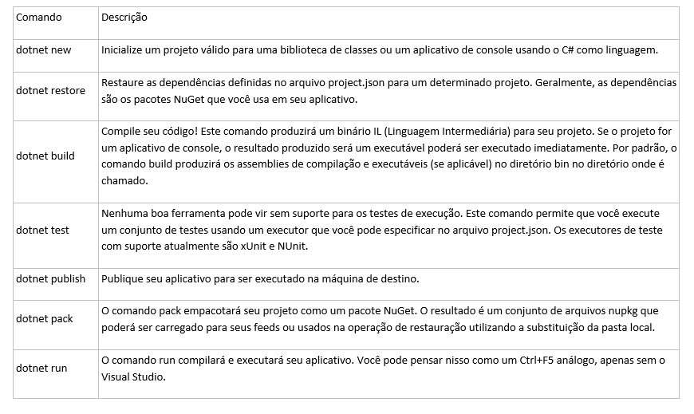
Compatibilidade
netstandard
O .NET Standard foi criado para que o compartilhamento e a reutilização de código entre várias plataformas .NET se tornem muito mais fáceis. 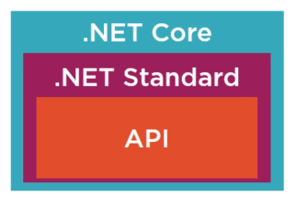
Para que o .NET continue evoluindo rapidamente, um padrão foi criado para que todas as versões dos frameworks suportem o
mesmo conjunto de APIs.

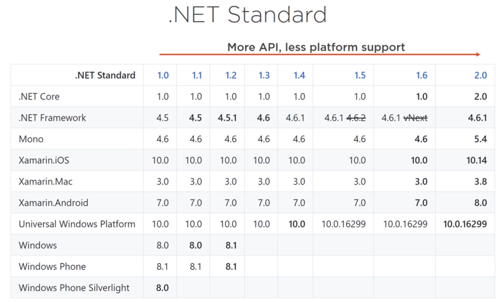
A versão 2.0 do .NET Standard suporta 142% mais APIs que a versão anterior. Um salto incrível no número de APIs suportadas. 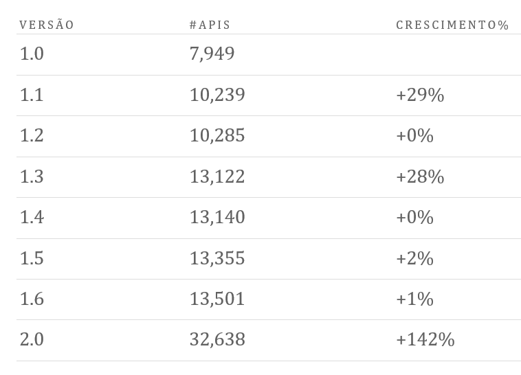
E o que muda?
.NET Clássico vs .NET Core
Project file (csproj)
- É possível editar o arquivo sem fazer “unload” do projeto
- Mudança na estrutura
- Não contém nenhuma referência para pastas ou arquivos


Serving files

Main Method
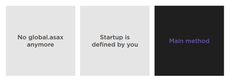
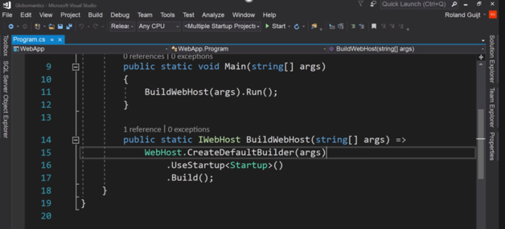
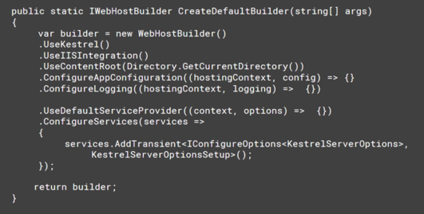
Startup, Pipeline e Middleware
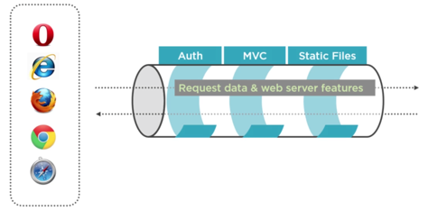
Middleware
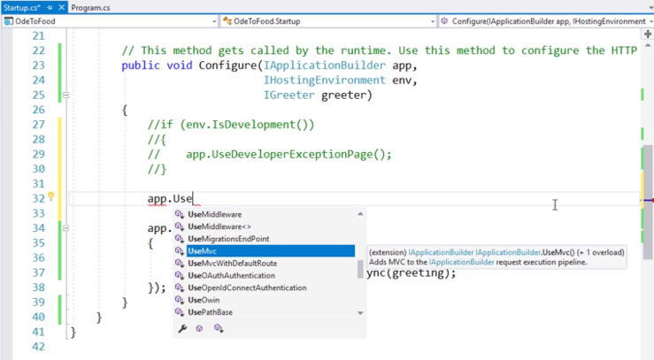
Middleware
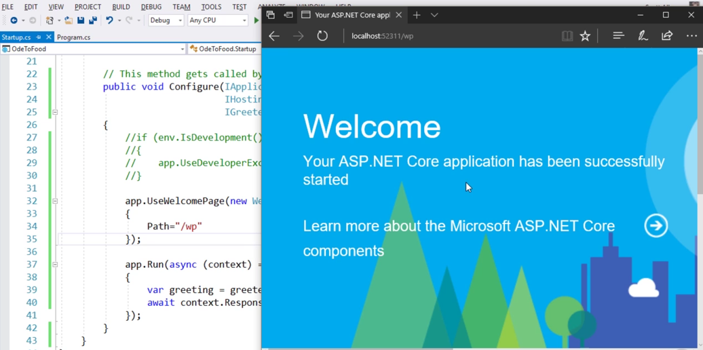
Kestrel – Servidor web INTERNO
O Kestrel é um servidor web de código aberto usado para hospedar aplicativos .NET em qualquer plataforma. Uma vez que o Kestrel não é um servidor web completo, você deve executá-lo por trás do IIS ou do NGNIX. Ele foi projetado para tornar o ASP.NET o mais rápido possível, mas é limitado em sua capacidade de gerenciar a segurança e servir arquivos estáticos.
Kestrel
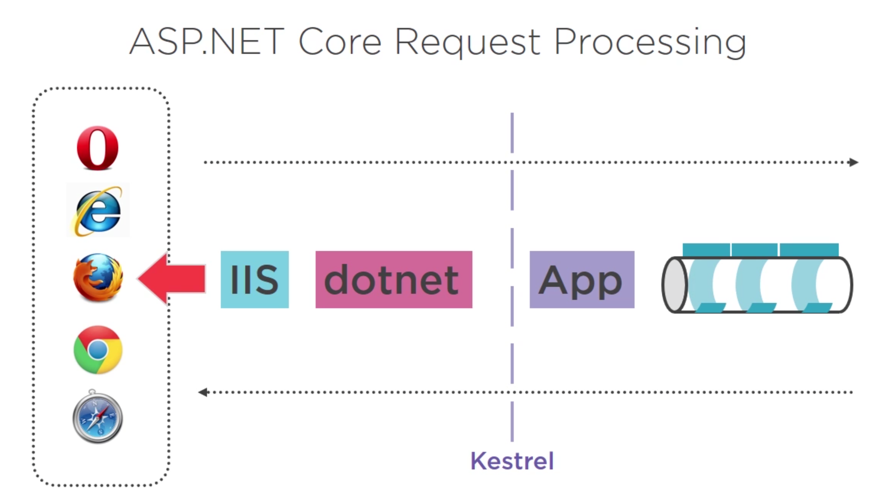
Iniciando um projeto!
- Download .NET CORE 2.0
- Download VSCode/VS2017 Community
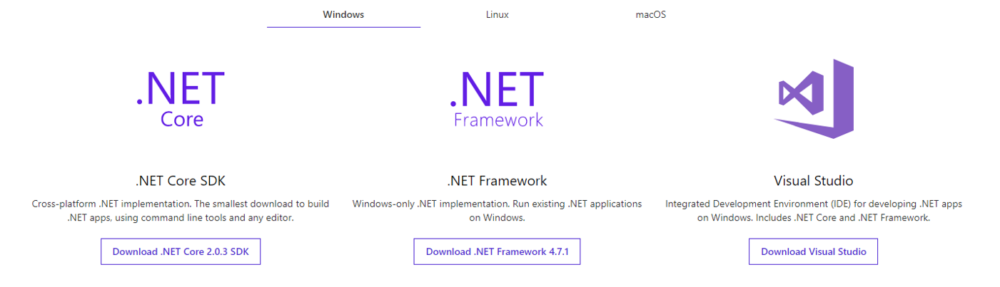